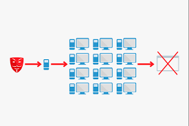

Denial-of-service attack (DoS attack) — კიბერ-თავდასხმის ერთ-ერთი სახე, სადაც თავდამსხმელი ცდილობს გახადოს ინტერნეტ-რესურსი ხელმიუწვდომელი, ანუ, ხელი შეუშალოს მომხმარებელს ჰქონდეს ინფორმაციაზე წვდომა. DoS შეტევის ყველაზე გავრცელებული ფორმაა, როცა თავდამსხმელი ცდილობს გადატვირთოს ქსელი ინფორმაციით (ინგლ. flood network). შეიძლება პარალელი გავავლოთ ხალხთან, რომლებიც, დგანან რაიმე დაწესებულების შესასვლელთან — მაღაზიასთან, ქარხანასთან და არ უშვებენ კანონიერ ხალხს შენობაში. ანალოგიურად, როცა გვსურს რაიმე ვებ-საიტზე შესვლა, საიტის URL-ს ჩავწერთ ინტერნეტ ბრაუზერში და დავაწვებით Enter ღილაკს, იმ საიტის სერვერზე იგზავნება მოთხოვნა (ინგ. Request), რათა გაიხსნას გვერდი. სერვერს შეუძლია ერთდროულად მხოლოდ განსაზღვრული რაოდენობის მოთხოვნის „დამუშავება“, ასე რომ, თუ თავდამსხმელი გადატვირთავს სერვერს ამ „მოთხოვნებით“, სერვერი ვერ შეძლებს თქვენი „მოთხოვნის“] დამუშავებას, შესაბამისად, ვერ იხილავთ ვებ-საიტს. ეს არის ვებ-საიტის „სერვისის უარყოფა“ (ინგ. Denial of Service (DoS)), რადგან ჩვენ არ გვაქვს საიტთან წვდომა.
Distributed denial-of-service (DDoS) არის მასშტაბური DoS შეტევა, სადაც თავდამსხმელი იყენებს ერთ ან მეტ, ხშირ შემთხვევაში, ათასობით IP მისამართს. ამ ტიპის შეტევები ძირითადად ხდება ვებ-საიტებზე. გარკვეული ხნის წინ, DDoS შეტევების გამო გაითიშა ისეთი მსხვილი საიტები, როგორებიც არის Twitter, GitHub და სხვა.
.png)
რესურსები ინტერნეტში